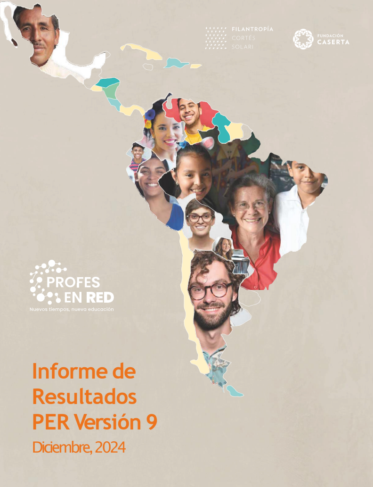
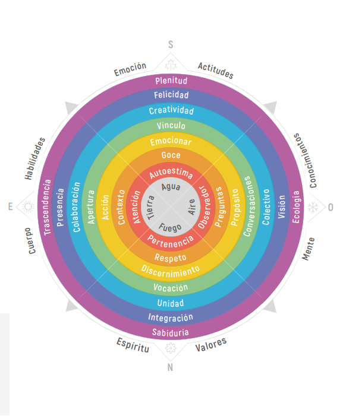
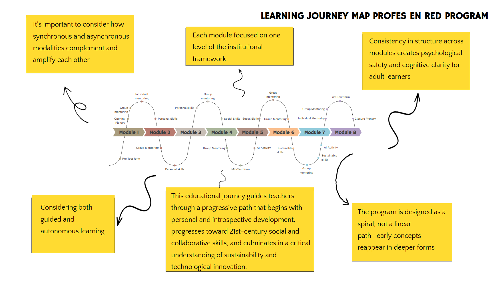
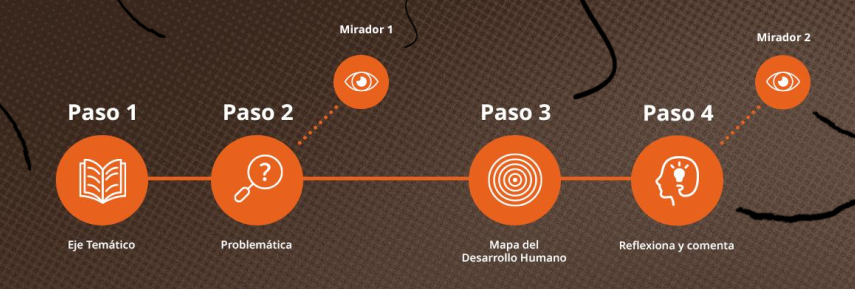
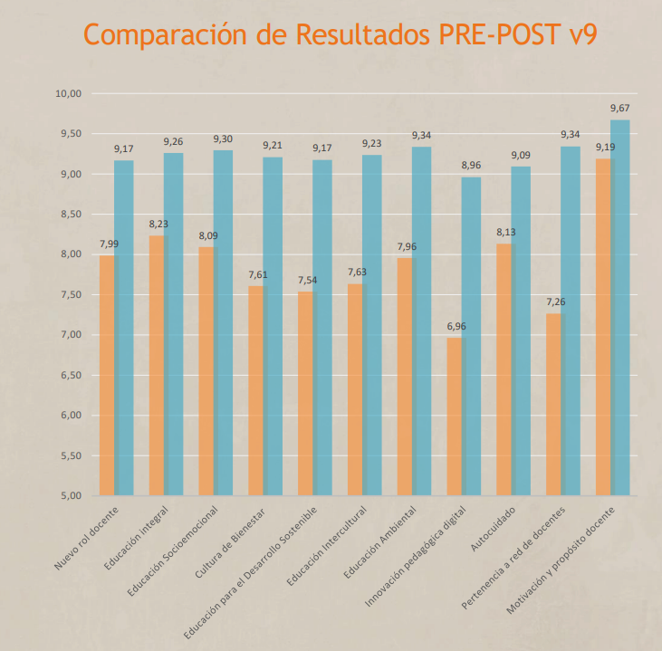
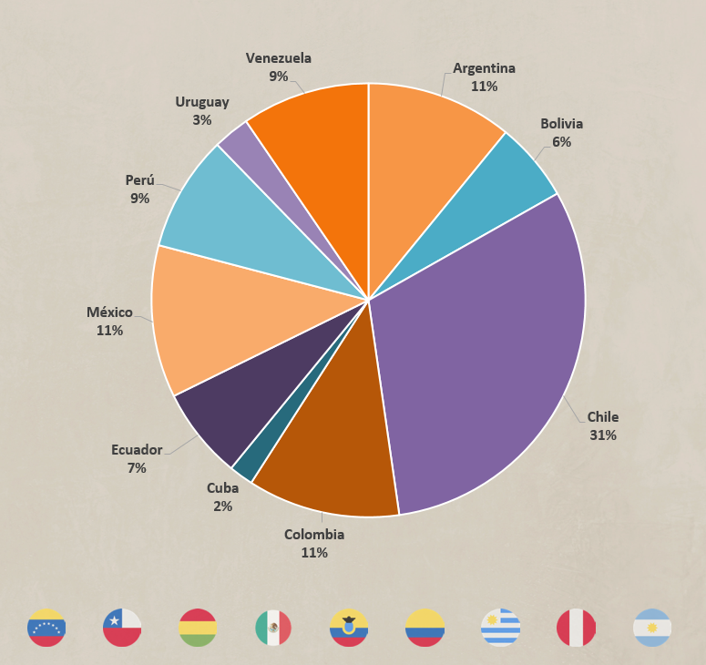
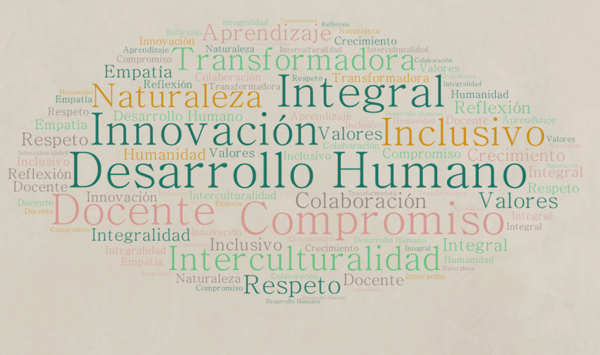

Profes en Red
An online teacher training program empowering 21st-century educators across Latin America. From 50-teacher pilot to 227+ inscribed per cohort across 11 countries, sustained through 10 consecutive iterations with statistically significant pre-post gains. Un programa online de formación docente para educadores del siglo XXI en Latinoamérica. De un piloto de 50 docentes a 227+ inscritos por cohorte en 11 países, sostenido durante 10 iteraciones consecutivas con ganancias pre-post estadísticamente significativas.

Fundación Caserta is a Chilean non-profit advancing educational transformation through the Mapa del Desarrollo Humano framework (seven levels, four dimensions). They had piloted an online teacher training program with 50 educators on Google Classroom, but the second version needed a full rebuild: the institutional framework had no visible connection to module content, mentorships had no structure, evaluation tools were missing, and content was plain text without multimedia. The constraint: the organization could only work with free Google tools. La Fundación Caserta es una ONG chilena dedicada a la transformación educativa a través del Mapa del Desarrollo Humano (siete niveles, cuatro dimensiones). Habían piloteado un programa online de formación docente con 50 educadores en Google Classroom, pero la segunda versión necesitaba ser reconstruida por completo: el marco institucional no se conectaba con el contenido de los módulos, las mentorías carecían de estructura, no había instrumentos de evaluación y el contenido era texto plano sin multimedia. La restricción: la organización solo podía trabajar con herramientas gratuitas de Google.

Director of Research & Learning. Owned the full redesign across three streams: course design (audit + new architecture + 8 thematic modules), leadership and coaching (oversaw implementation, led the facilitator team with coaching mindset), and evaluation research (built mixed-method instruments measuring impact through pre/post analysis with paired-sample t-tests, qualitative thematic insights, and continuous feedback). Director de Investigación y Aprendizaje. Lideré el rediseño completo en tres frentes: diseño curricular (audit + nueva arquitectura + 8 módulos temáticos), liderazgo y coaching (supervisión de implementación, conducción del equipo de facilitadores con enfoque de coaching) y evaluación e investigación (instrumentos mixed-method con pre/post pareado t-test, análisis temático cualitativo y feedback continuo).
- Analysis. Stakeholder diagnostic identified four challenge areas: framework disconnection, unstructured mentorships, evaluation gap, content delivery issues. Needs assessment grounded in UNESCO E2030, OECD Future of Education 2030/2040, and regional teacher data.Diagnóstico con stakeholders identificó cuatro áreas críticas: desconexión del marco, mentorías sin estructura, falta de evaluación, problemas de delivery. Needs assessment basado en UNESCO E2030, OECD Future of Education 2030/2040 y datos regionales docentes.
- Design. Reframed learning objectives. Eight modules thematically structured with storytelling as connective tissue. Spiral learning architecture (early concepts reappear in deeper forms). Dual format: synchronous mentorships + asynchronous self-paced.Replanteamiento de objetivos. Ocho módulos temáticos con storytelling como hilo conector. Arquitectura en espiral (los conceptos tempranos reaparecen en formas más profundas). Doble formato: mentorías sincrónicas + asincrónico autónomo.
- Development. Module guides applying chunking and cognitive load principles. Microlearning videos crafted specifically for the audience. Spotify podcast curation as informal channel. Facilitator guides, rubrics, session templates.Guías de módulo aplicando chunking y carga cognitiva. Microvideos creados específicamente para la audiencia. Curaduría de podcasts en Spotify como canal informal. Guías de facilitador, rúbricas, plantillas de sesión.
- Implementation. Weekly supervision of mentorships. Mid-term surveys feeding agile adjustments. Follow-up coaching for facilitators.Supervisión semanal de mentorías. Encuestas mid-term alimentando ajustes ágiles. Coaching de seguimiento para facilitadores.
- Evaluation. Mixed-method instruments: pre/mid/post Google Forms with quantitative tracking and open-ended capture. Paired-sample t-tests (one-tailed) and thematic analysis of reflections. Self-efficacy chosen as the outcome variable, aligned with the institution's holistic approach.Instrumentos mixed-method: formularios pre/mid/post con tracking cuantitativo y captura abierta. T-tests pareados (una cola) y análisis temático de reflexiones. Autoeficacia como variable de resultado, alineada con el enfoque holístico institucional.


From 471 applicants the program inscribed 227 educators across 11 LATAM countries (Chile 31%, Argentina 11%, Colombia 11%, México 11%, others). Average age 42, 70% women, 78% K-12 classroom teachers. Paired-sample t-tests showed statistically significant pre-post gains across all 11 measured competencies, with the largest lifts in Belonging to the teacher network (29%) and Digital Pedagogical Innovation (29%). Overall satisfaction 6.78/7. 25%+ of new participants arrive through alumni referrals. Most cited insight in qualitative analysis: the institutional framework itself, originally the disconnection point. De 471 postulantes el programa inscribió 227 educadores en 11 países LATAM (Chile 31%, Argentina 11%, Colombia 11%, México 11%, otros). Edad promedio 42 años, 70% mujeres, 78% docentes K-12. Los t-tests pareados mostraron ganancias pre-post estadísticamente significativas en las 11 competencias medidas, con las mayores subidas en Pertenencia a red docente (29%) e Innovación pedagógica digital (29%). Satisfacción general 6.78/7. 25%+ de nuevos participantes llegan por recomendación de egresados. Insight más citado en el análisis cualitativo: el propio marco institucional, originalmente el punto de desconexión.



Read the full v9 results report (PDF)Leer informe de resultados v9 (PDF)
Design within constraints sparks innovation. Working with Google's free toolkit forced modular thinking, clarity, and creative structuring that ended up being pedagogical advantages, not limitations. Evaluation must be purpose-built. Off-the-shelf tools fell short, but custom mixed-method instruments aligned with learning goals produced meaningful, statistically defensible insights. Mentorship is central, not peripheral. Weekly group and individual coaching weren't add-ons; they were the pedagogical anchors that sustained reflection and transformation across all cohorts. Diseñar bajo restricciones detona innovación. Trabajar con el toolkit gratuito de Google forzó pensamiento modular, claridad y estructuración creativa que terminaron siendo ventajas pedagógicas, no limitaciones. La evaluación debe ser purpose-built. Las herramientas estándar se quedan cortas, pero los instrumentos mixed-method a medida alineados con objetivos producen insights válidos y estadísticamente defendibles. La mentoría es central, no periférica. El coaching grupal e individual semanal no fueron add-ons; fueron los anclajes pedagógicos que sostuvieron la reflexión y transformación a través de todas las cohortes.